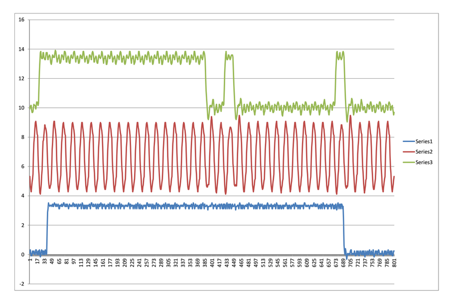

Rigol DS1054Z digital storage scope - decoding I2S signals
I recently got one of these great little digital scopes. It has a few serial bus decoding packages (on a try-before-buy basis). You get 36 hours to play with them. Unfortunately they don’t include I2S bus decoding. I2S is a bus standard commonly used for transferring digital audio around, for example between ADCs and DACs.
No matter! You can capture and export full-resolution traces of signals via a USB memory stick. This seems to work best if the stick is FAT formatted rather than FAT32. The file format is .CSV which is great for importing into Excel and viewing. You can then use Excel’s charting function to provide a decode of your signals with much greater time-resolution than you can see on the scope’s display itself (which is still pretty good). For example

You can also parse the .CSV file and decode signals quite easily using scripting languages such as PHP, giving outputs in binary, hex or whatever you like - e.g.
Using logic threshold of 1.900000 volts
00000000 00001000 00000000 001 Bits:27 Hex: 00004001 #0:64
540 LRCLK edge 1: 00000000 00000000 00110000 00000001 Bits:32 Hex: 00003001 #1:48
1191 LRCLK edge 2: 00000000 00000000 00010000 00000001 Bits:32 Hex: 00001001 #2:16
1842 LRCLK edge 3: 00000000 00000000 01010000 00000001 Bits:32 Hex: 00005001 #3:80
2494 LRCLK edge 4: 11111010 10000011 11110000 00000001 Bits:32 Hex: fa83f001 #4:-359440
3145 LRCLK edge 5: 00000000 00000000 00100000 00000001 Bits:32 Hex: 00002001 #5:32
3796 LRCLK edge 6: 00000000 00000000 00010000 00000001 Bits:32 Hex: 00001001 #6:16
4447 LRCLK edge 7: 00000000 00000000 00010000 00000001 Bits:32 Hex: 00001001 #7:16
5098 LRCLK edge 8: 11111111 11111111 10100000 00000001 Bits:32 Hex: ffffa001 #0:-96
5749 LRCLK edge 9: 00000000 00000000 00010000 00000001 Bits:32 Hex: 00001001 #1:16
6400 LRCLK edge 10: 11111111 11111111 11000000 00000001 Bits:32 Hex: ffffc001 #2:-64
Here’s the code - updated to read the signals on the correct edge
<?php
// Decode I2S data captured in CSV file from Rigol DS1054Z scope
// Assumptions: First two rows in the file are header lines - skip these.
//
// Channels are arranged as : CH1 = BCLK, CH2 = LRCLK, CH3 = DOUT, CH4 = scopetrig
// Command line parameters: <inputfile> <voltage threshold>
// threshold of 1.8 or 1.9 volts seems to be reliable with 3.3v logic.
//
// Fixed to toggle in data on rising edges of BCLK
if($argv[1] == "") {
exit("Usage: ".$argv[0]." input_file [voltage_threshold]n");
}
// Get parameters
$fp = fopen($argv[1], "r");
if($argv[2] == "") {
$threshold = 1.8;
}
else {
$threshold = (float)$argv[2]; //Volts
}
if(is_numeric($threshold)) {
print("Using logic threshold of ".sprintf("%f", $threshold)." voltsn");
}
else {
exit("voltage threshold must be a numeric value");
}
// Skip the two expected header lines
$ln = fgetcsv($fp);
$ln = fgetcsv($fp);
$i=1;
// Get the first line of real data in
$ln = fgetcsv($fp);
$bclk = $ln[0];
$lrclk = $ln[1];
$dout = $ln[2];
// Set up initial trigger conditions
$bclkTrig = $bclk;
$lrclkTrig = $lrclk;
//Count edges as they happen
$bclkEdgeCount = 0;
$lrclkEdgeCount = 0;
$doneLSB = false;
// Collect bits into this shift register
$bitcount = 0;
$doutShiftReg = 0;
while(!feof($fp)) {
$i=$i+1;
$ln = fgetcsv($fp);
$bclk = $ln[0];
$lrclk = $ln[1];
$dout = $ln[2];
// Check for a RISING edge in BCLK
if(($bclkTrig <$threshold) && ($bclk >= $threshold) ) {
$bclkEdgeCount++;
// Check if the LRCLK line has changed state since the last edge
if( ($lrclkTrig >$threshold) <> ($lrclk >$threshold)) {
// Dump out hex value accumulated so far, the count of bits in this sample, and decimal equivalent
$hexnum = sprintf("%08x", $doutShiftReg);
// Handle 2-s complement sign conversion for the 24-bit audio
$signedSample = $doutShiftReg >> 8;
if($signedSample >= 2\*\*23 -1) {
$signedSample = $signedSample - (2\*\*24);
}
echo " Bits:".$bitcount." Hex: ".$hexnum." #".($lrclkEdgeCount %8).":".$signedSample;
$lrclkEdgeCount++;
echo "n".sprintf("%8d",$i)." LRCLK edge ".sprintf("%4d",$lrclkEdgeCount).": ";
$lrclkTrig = $lrclk;
// Start accumulating bits into the shift register
$bitcount = 0;
$doutShiftReg = 0;
}
// output raw data, and accumulate it into shift register
if($dout > $threshold) $doutBit = 1; else $doutBit = 0;
echo $doutBit;
$bitcount++;
if($bitcount %8 == 0) echo " "; // pretty-print spacing
$doutShiftReg = ($doutShiftReg <<1) + $doutBit;
}
// this is the new value we'll compare against
$bclkTrig = $bclk;
}
echo "n";
?>
Using the program, it’s possible to capture I2S signals and decode them as follows. This is data from a Behringer P16I device, through a Wolfson WM8804 evaulation board:
Using logic threshold of 1.900000 volts
0000001 Bits:7 Hex: 00000001 #0:0
132 LRCLK edge 1: 11111111 11111111 11000000 00000001 Bits:32 Hex: ffffc001 #1:-64
783 LRCLK edge 2: 11111111 11111111 10100000 00000001 Bits:32 Hex: ffffa001 #2:-96
1434 LRCLK edge 3: 11111111 11111111 01100000 00000001 Bits:32 Hex: ffff6001 #3:-160
2086 LRCLK edge 4: 11111111 11111111 01110000 00000001 Bits:32 Hex: ffff7001 #4:-144
2737 LRCLK edge 5: 00000000 00000000 00100000 00000001 Bits:32 Hex: 00002001 #5:32
3388 LRCLK edge 6: 11111111 11111111 11010000 00000001 Bits:32 Hex: ffffd001 #6:-48
4039 LRCLK edge 7: 11111111 11111111 10010000 00000001 Bits:32 Hex: ffff9001 #7:-112
4690 LRCLK edge 8: 00000000 00000000 01100000 00000001 Bits:32 Hex: 00006001 #0:96
5341 LRCLK edge 9: 11111111 11111110 11110000 00000001 Bits:32 Hex: fffef001 #1:-272
5992 LRCLK edge 10: 11111111 11111111 10110000 00000001 Bits:32 Hex: ffffb001 #2:-80
6643 LRCLK edge 11: 00000000 00000000 01110000 00000001 Bits:32 Hex: 00007001 #3:112
7294 LRCLK edge 12: 00000000 00000000 11010000 00000001 Bits:32 Hex: 0000d001 #4:208
7945 LRCLK edge 13: 00000000 00000000 01100000 00000001 Bits:32 Hex: 00006001 #5:96
8596 LRCLK edge 14: 00000000 00000000 00010000 00000001 Bits:32 Hex: 00001001 #6:16
9247 LRCLK edge 15: 00000000 00000000 10010000 00000001 Bits:32 Hex: 00009001 #7:144
9898 LRCLK edge 16: 11111111 11111111 01010000 00000001 Bits:32 Hex: ffff5001 #0:-176
10549 LRCLK edge 17: 11111111 11111111 10110000 00000001 Bits:32 Hex: ffffb001 #1:-80
11200 LRCLK edge 18: 00000000 00000000 01000000 00000001 Bits:32 Hex: 00004001 #2:64
11851 LRCLK edge 19: 00000000 00000000 01100000 00000001 Bits:32 Hex: 00006001 #3:96
12502 LRCLK edge 20: 11111111 11111111 10110000 00000001 Bits:32 Hex: ffffb001 #4:-80
13153 LRCLK edge 21: 00000000 00000000 10100000 00000001 Bits:32 Hex: 0000a001 #5:160
13804 LRCLK edge 22: 00000000 00000000 00010000 00000001 Bits:32 Hex: 00001001 #6:16
14455 LRCLK edge 23: 11111111 11111111 10000000 00000001 Bits:32 Hex: ffff8001 #7:-128
15106 LRCLK edge 24: 00000000 00000000 10000000 00000001 Bits:32 Hex: 00008001 #0:128
15758 LRCLK edge 25: 11111111 11111111 10010000 00000001 Bits:32 Hex: ffff9001 #1:-112
16409 LRCLK edge 26: 11111111 11111111 10100000 00000001 Bits:32 Hex: ffffa001 #2:-96
17060 LRCLK edge 27: 00000000 00000000 00000000 00000001 Bits:32 Hex: 00000001 #3:0
17711 LRCLK edge 28: 00000000 00000000 00000000 00000001 Bits:32 Hex: 00000001 #4:0
18362 LRCLK edge 29: 00000000 00000000 11100000 00000001 Bits:32 Hex: 0000e001 #5:224
19013 LRCLK edge 30: 00000000 00000000 10000000 00000001 Bits:32 Hex: 00008001 #6:128
19664 LRCLK edge 31: 00000000 00000000 01010000 00000001 Bits:32 Hex: 00005001 #7:80
20315 LRCLK edge 32: 00000000 00000000 10100000 00000001 Bits:32 Hex: 0000a001 #0:160
20966 LRCLK edge 33: 11111111 11111111 11000000 00000001 Bits:32 Hex: ffffc001 #1:-64
21617 LRCLK edge 34: 11111111 11111110 11110000 00000001 Bits:32 Hex: fffef001 #2:-272
22268 LRCLK edge 35: 11111111 11111111 10100000 00000001 Bits:32 Hex: ffffa001 #3:-96
22919 LRCLK edge 36: 00000000 00000000 00110000 00000001 Bits:32 Hex: 00003001 #4:48
23570 LRCLK edge 37: 00000000 00000000 01000000 00000001 Bits:32 Hex: 00004001 #5:64
24221 LRCLK edge 38: 11111111 11111111 11100000 00000001 Bits:32 Hex: ffffe001 #6:-32
24872 LRCLK edge 39: 11111111 11111111 11100000 00000001 Bits:32 Hex: ffffe001 #7:-32
25523 LRCLK edge 40: 11111111 11111111 11110000 00000001 Bits:32 Hex: fffff001 #0:-16
26174 LRCLK edge 41: 00000000 00000000 10010000 00000001 Bits:32 Hex: 00009001 #1:144
26825 LRCLK edge 42: 00000000 00000000 01010000 00000001 Bits:32 Hex: 00005001 #2:80
27476 LRCLK edge 43: 11111111 11111111 10000000 00000001 Bits:32 Hex: ffff8001 #3:-128
28127 LRCLK edge 44: 11111111 11111111 01110000 00000001 Bits:32 Hex: ffff7001 #4:-144
28778 LRCLK edge 45: 00000000 00000001 00000000 00000001 Bits:32 Hex: 00010001 #5:256
29429 LRCLK edge 46: 11111111 11111111 11110000 00000001 Bits:32 Hex: fffff001 #6:-16
30080 LRCLK edge 47: 00000000 00000000 01000000 00000001 Bits:32 Hex: 00004001 #7:64
30732 LRCLK edge 48: 11111111 11111111 00110000 00000001 Bits:32 Hex: ffff3001 #0:-208
31383 LRCLK edge 49: 00000000 00000000 00010000 00000001 Bits:32 Hex: 00001001 #1:16
32034 LRCLK edge 50: 00000000 00000000 01000000 00000001 Bits:32 Hex: 00004001 #2:64
32685 LRCLK edge 51: 00000000 00000000 01110000 00000001 Bits:32 Hex: 00007001 #3:112
33336 LRCLK edge 52: 11111111 11111111 10010000 00000001 Bits:32 Hex: ffff9001 #4:-112
33987 LRCLK edge 53: 11111111 11111111 00100000 00000001 Bits:32 Hex: ffff2001 #5:-224
34638 LRCLK edge 54: 11111111 11111111 01100000 00000001 Bits:32 Hex: ffff6001 #6:-160
35289 LRCLK edge 55: 11111111 11111111 01100000 00000001 Bits:32 Hex: ffff6001 #7:-160
35940 LRCLK edge 56: 00000000 00000000 00100000 00000001 Bits:32 Hex: 00002001 #0:32
36591 LRCLK edge 57: 00000000 00000000 01000000 00000001 Bits:32 Hex: 00004001 #1:64
37242 LRCLK edge 58: 00000000 00000000 00000000 00000001 Bits:32 Hex: 00000001 #2:0
37893 LRCLK edge 59: 00000000 00000000 01010000 00000001 Bits:32 Hex: 00005001 #3:80
38544 LRCLK edge 60: 00000000 00000001 00010000 00000001 Bits:32 Hex: 00011001 #4:272
39195 LRCLK edge 61: 11111111 11111111 11100000 00000001 Bits:32 Hex: ffffe001 #5:-32
39846 LRCLK edge 62: 11111111 11111111 11100000 00000001 Bits:32 Hex: ffffe001 #6:-32
40497 LRCLK edge 63: 00000000 00000000 01110000 00000001 Bits:32 Hex: 00007001 #7:112
41148 LRCLK edge 64: 11111111 11111111 11110000 00000001 Bits:32 Hex: fffff001 #0:-16
41799 LRCLK edge 65: 00000000 00000000 00000000 00000001 Bits:32 Hex: 00000001 #1:0
42450 LRCLK edge 66: 11111111 11111111 10000000 00000001 Bits:32 Hex: ffff8001 #2:-128
43101 LRCLK edge 67: 11111111 11111110 11100000 00000001 Bits:32 Hex: fffee001 #3:-288
43753 LRCLK edge 68: 11111111 11111111 10010000 00000001 Bits:32 Hex: ffff9001 #4:-112
44403 LRCLK edge 69: 00000000 00000000 10000000 00000001 Bits:32 Hex: 00008001 #5:128
45054 LRCLK edge 70: 00000000 00000000 10000000 00000001 Bits:32 Hex: 00008001 #6:128
45706 LRCLK edge 71: 00000000 00000000 10100000 00000001 Bits:32 Hex: 0000a001 #7:160
46357 LRCLK edge 72: 11111111 11111111 01100000 00000001 Bits:32 Hex: ffff6001 #0:-160
47008 LRCLK edge 73: 11111111 11111111 10000000 00000001 Bits:32 Hex: ffff8001 #1:-128
47659 LRCLK edge 74: 11111111 11111111 11010000 00000001 Bits:32 Hex: ffffd001 #2:-48
48310 LRCLK edge 75: 11111111 11111111 01010000 00000001 Bits:32 Hex: ffff5001 #3:-176
48961 LRCLK edge 76: 00000000 00000000 01000000 00000001 Bits:32 Hex: 00004001 #4:64
49612 LRCLK edge 77: 00000000 00000000 01110000 00000001 Bits:32 Hex: 00007001 #5:112
50263 LRCLK edge 78: 11111111 11111111 01110000 00000001 Bits:32 Hex: ffff7001 #6:-144
50914 LRCLK edge 79: 00000000 00000000 11110000 00000001 Bits:32 Hex: 0000f001 #7:240
51565 LRCLK edge 80: 00000000 00000000 01100000 00000001 Bits:32 Hex: 00006001 #0:96
52216 LRCLK edge 81: 11111111 11111110 11110000 00000001 Bits:32 Hex: fffef001 #1:-272
52867 LRCLK edge 82: 11111111 11111111 10000000 00000001 Bits:32 Hex: ffff8001 #2:-128
53518 LRCLK edge 83: 00000000 00000000 00010000 00000001 Bits:32 Hex: 00001001 #3:16
54169 LRCLK edge 84: 00000000 00000000 10010000 00000001 Bits:32 Hex: 00009001 #4:144
54820 LRCLK edge 85: 00000000 00000000 10110000 00000001 Bits:32 Hex: 0000b001 #5:176
55471 LRCLK edge 86: 00000000 00000000 10010000 00000001 Bits:32 Hex: 00009001 #6:144
56122 LRCLK edge 87: 11111111 11111111 10100000 00000001 Bits:32 Hex: ffffa001 #7:-96
56773 LRCLK edge 88: 00000000 00000000 00100000 00000001 Bits:32 Hex: 00002001 #0:32
57424 LRCLK edge 89: 11111111 11111111 11110000 00000001 Bits:32 Hex: fffff001 #1:-16
58075 LRCLK edge 90: 00000000 00000000 10000000 00000001 Bits:32 Hex: 00008001 #2:128
58727 LRCLK edge 91: 00000000 00000000 01110000 00000001 Bits:32 Hex: 00007001 #3:112
59378 LRCLK edge 92: 00000000 00000000 10110000 00000001 Bits:32 Hex: 0000b001 #4:176
60029 LRCLK edge 93: 00000000 00000000 00110000 00000001 Bits:32 Hex: 00003001 #5:48
60680 LRCLK edge 94: 00000000 00000000 10110000 00000001 Bits:32 Hex: 0000b001 #6:176
61331 LRCLK edge 95: 11111111 11111111 01010000 00000001 Bits:32 Hex: ffff5001 #7:-176
61982 LRCLK edge 96: 11111111 11111111 11100000 00000001 Bits:32 Hex: ffffe001 #0:-32
62633 LRCLK edge 97: 11111111 11111111 10100000 00000001 Bits:32 Hex: ffffa001 #1:-96
63284 LRCLK edge 98: 11111111 11111111 11010000 00000001 Bits:32 Hex: ffffd001 #2:-48
63935 LRCLK edge 99: 11111111 11111111 11110000 00000001 Bits:32 Hex: fffff001 #3:-16
64586 LRCLK edge 100: 11111111 11111111 10100000 00000001 Bits:32 Hex: ffffa001 #4:-96
65237 LRCLK edge 101: 00000000 00000000 01100000 00000001 Bits:32 Hex: 00006001 #5:96
65888 LRCLK edge 102: 11111111 11111111 11100000 00000001 Bits:32 Hex: ffffe001 #6:-32
66539 LRCLK edge 103: 11111111 11111111 11110000 00000001 Bits:32 Hex: fffff001 #7:-16
67190 LRCLK edge 104: 11111111 11111111 10010000 00000001 Bits:32 Hex: ffff9001 #0:-112
67841 LRCLK edge 105: 11111111 11111111 11110000 00000001 Bits:32 Hex: fffff001 #1:-16
68492 LRCLK edge 106: 11111111 11111111 01110000 00000001 Bits:32 Hex: ffff7001 #2:-144
69143 LRCLK edge 107: 00000000 00000000 10010000 00000001 Bits:32 Hex: 00009001 #3:144
69794 LRCLK edge 108: 11111111 11111111 11100000 00000001 Bits:32 Hex: ffffe001 #4:-32
70445 LRCLK edge 109: 11111111 11111111 10010000 00000001 Bits:32 Hex: ffff9001 #5:-112
71096 LRCLK edge 110: 00000000 00000000 00000000 00000001 Bits:32 Hex: 00000001 #6:0
71747 LRCLK edge 111: 00000000 00000000 10110000 00000001 Bits:32 Hex: 0000b001 #7:176
72399 LRCLK edge 112: 00000000 00000000 11010000 00000001 Bits:32 Hex: 0000d001 #0:208
73050 LRCLK edge 113: 11111111 11111111 11110000 00000001 Bits:32 Hex: fffff001 #1:-16
73701 LRCLK edge 114: 11111111 11111111 01110000 00000001 Bits:32 Hex: ffff7001 #2:-144
74352 LRCLK edge 115: 11111111 11111111 01100000 00000001 Bits:32 Hex: ffff6001 #3:-160
75003 LRCLK edge 116: 11111111 11111111 11110000 00000001 Bits:32 Hex: fffff001 #4:-16
75654 LRCLK edge 117: 11111111 11111111 10110000 00000001 Bits:32 Hex: ffffb001 #5:-80
76305 LRCLK edge 118: 11111111 11111111 10110000 00000001 Bits:32 Hex: ffffb001 #6:-80
76956 LRCLK edge 119: 11111111 11111111 10110000 00000001 Bits:32 Hex: ffffb001 #7:-80
77607 LRCLK edge 120: 11111111 11111111 11010000 00000001 Bits:32 Hex: ffffd001 #0:-48
78258 LRCLK edge 121: 11111111 11111111 11010000 00000001 Bits:32 Hex: ffffd001 #1:-48
78909 LRCLK edge 122: 11111111 11111111 11010000 00000001 Bits:32 Hex: ffffd001 #2:-48
79560 LRCLK edge 123: 11111111 11111111 01110000 00000001 Bits:32 Hex: ffff7001 #3:-144
80211 LRCLK edge 124: 11111111 11111111 01110000 00000001 Bits:32 Hex: ffff7001 #4:-144
80862 LRCLK edge 125: 11111111 11111111 11100000 00000001 Bits:32 Hex: ffffe001 #5:-32
81513 LRCLK edge 126: 11111111 11111111 11010000 00000001 Bits:32 Hex: ffffd001 #6:-48
82164 LRCLK edge 127: 11111111 11111111 10100000 00000001 Bits:32 Hex: ffffa001 #7:-96
82815 LRCLK edge 128: 00000000 00000000 01100000 00000001 Bits:32 Hex: 00006001 #0:96
83466 LRCLK edge 129: 00000000 00000000 00100000 00000001 Bits:32 Hex: 00002001 #1:32
84117 LRCLK edge 130: 00000000 00000000 10000000 00000001 Bits:32 Hex: 00008001 #2:128
84768 LRCLK edge 131: 00000000 00000000 11110000 00000001 Bits:32 Hex: 0000f001 #3:240
85420 LRCLK edge 132: 00000000 00000000 01010000 00000001 Bits:32 Hex: 00005001 #4:80
86071 LRCLK edge 133: 00000000 00000000 00110000 00000001 Bits:32 Hex: 00003001 #5:48
86722 LRCLK edge 134: 11111111 11111111 11000000 00000001 Bits:32 Hex: ffffc001 #6:-64
87373 LRCLK edge 135: 11111111 11111111 10010000 00000001 Bits:32 Hex: ffff9001 #7:-112
88024 LRCLK edge 136: 11111111 11111111 11110000 00000001 Bits:32 Hex: fffff001 #0:-16
88675 LRCLK edge 137: 11111111 11111111 10100000 00000001 Bits:32 Hex: ffffa001 #1:-96
89326 LRCLK edge 138: 00000000 00000001 00000000 00000001 Bits:32 Hex: 00010001 #2:256
89977 LRCLK edge 139: 11111111 11111111 10010000 00000001 Bits:32 Hex: ffff9001 #3:-112
90628 LRCLK edge 140: 00000000 00000000 10000000 00000001 Bits:32 Hex: 00008001 #4:128
91279 LRCLK edge 141: 00000000 00000000 00010000 00000001 Bits:32 Hex: 00001001 #5:16
91930 LRCLK edge 142: 00000000 00000000 11000000 00000001 Bits:32 Hex: 0000c001 #6:192
92581 LRCLK edge 143: 00000000 00000000 00010000 00000001 Bits:32 Hex: 00001001 #7:16
93232 LRCLK edge 144: 11111111 11111111 01000000 00000001 Bits:32 Hex: ffff4001 #0:-192
93883 LRCLK edge 145: 00000000 00000000 11000000 00000001 Bits:32 Hex: 0000c001 #1:192
94534 LRCLK edge 146: 00000000 00000000 00100000 00000001 Bits:32 Hex: 00002001 #2:32
95185 LRCLK edge 147: 00000000 00000000 01000000 00000001 Bits:32 Hex: 00004001 #3:64
95836 LRCLK edge 148: 11111111 11111111 10100000 00000001 Bits:32 Hex: ffffa001 #4:-96
96487 LRCLK edge 149: 11111111 11111111 10110000 00000001 Bits:32 Hex: ffffb001 #5:-80
97138 LRCLK edge 150: 00000000 00000000 01110000 00000001 Bits:32 Hex: 00007001 #6:112
97789 LRCLK edge 151: 11111111 11111111 10110000 00000001 Bits:32 Hex: ffffb001 #7:-80
98440 LRCLK edge 152: 00000000 00000000 00110000 00001001 Bits:32 Hex: 00003009 #0:48
99091 LRCLK edge 153: 11111111 11111111 10100000 00001001 Bits:32 Hex: ffffa009 #1:-96
99742 LRCLK edge 154: 11111111 11111111 11010000 00000001 Bits:32 Hex: ffffd001 #2:-48
100394 LRCLK edge 155: 00000000 00000000 10100000 00000001 Bits:32 Hex: 0000a001 #3:160
101045 LRCLK edge 156: 00000000 00000000 00110000 00000001 Bits:32 Hex: 00003001 #4:48
101696 LRCLK edge 157: 00000000 00000000 10110000 00000001 Bits:32 Hex: 0000b001 #5:176
102347 LRCLK edge 158: 00000000 00000000 11100000 00000001 Bits:32 Hex: 0000e001 #6:224
102998 LRCLK edge 159: 00000000 00000000 11010000 00000001 Bits:32 Hex: 0000d001 #7:208
103649 LRCLK edge 160: 00000000 00000000 10100000 00000001 Bits:32 Hex: 0000a001 #0:160
104300 LRCLK edge 161: 00000000 00000000 01110000 00000001 Bits:32 Hex: 00007001 #1:112
104951 LRCLK edge 162: 11111111 11111111 10010000 00000001 Bits:32 Hex: ffff9001 #2:-112
105602 LRCLK edge 163: 11111111 11111110 11000000 00000001 Bits:32 Hex: fffec001 #3:-320
106253 LRCLK edge 164: 00000000 00000000 00100000 00000001 Bits:32 Hex: 00002001 #4:32
106904 LRCLK edge 165: 00000000 00000000 01010000 00000001 Bits:32 Hex: 00005001 #5:80
107555 LRCLK edge 166: 00000000 00000000 01010000 00000001 Bits:32 Hex: 00005001 #6:80
108206 LRCLK edge 167: 00000000 00000000 00010000 00000001 Bits:32 Hex: 00001001 #7:16
108857 LRCLK edge 168: 11111111 11111111 11100000 00000001 Bits:32 Hex: ffffe001 #0:-32
109508 LRCLK edge 169: 00000000 00000000 01010000 00000001 Bits:32 Hex: 00005001 #1:80
110159 LRCLK edge 170: 11111111 11111111 01100000 00000001 Bits:32 Hex: ffff6001 #2:-160
110810 LRCLK edge 171: 11111111 11111111 11100000 00000001 Bits:32 Hex: ffffe001 #3:-32
111461 LRCLK edge 172: 11111111 11111111 11010000 00000001 Bits:32 Hex: ffffd001 #4:-48
112112 LRCLK edge 173: 00000000 00000000 00110000 00000001 Bits:32 Hex: 00003001 #5:48
112764 LRCLK edge 174: 00000000 00000000 10110000 00000001 Bits:32 Hex: 0000b001 #6:176
113414 LRCLK edge 175: 00000000 00000000 10100000 00000001 Bits:32 Hex: 0000a001 #7:160
114065 LRCLK edge 176: 11111111 11111111 10100000 00000001 Bits:32 Hex: ffffa001 #0:-96
114717 LRCLK edge 177: 11111111 11111111 10000000 00000001 Bits:32 Hex: ffff8001 #1:-128
115368 LRCLK edge 178: 11111111 11111111 11100000 00000001 Bits:32 Hex: ffffe001 #2:-32
116019 LRCLK edge 179: 00000000 00000000 01110000 00000001 Bits:32 Hex: 00007001 #3:112
116670 LRCLK edge 180: 00000000 00000000 01010000 00000001 Bits:32 Hex: 00005001 #4:80
117321 LRCLK edge 181: 11111111 11111111 10110000 00000001 Bits:32 Hex: ffffb001 #5:-80
117972 LRCLK edge 182: 11111111 11111111 01100000 00000001 Bits:32 Hex: ffff6001 #6:-160
118623 LRCLK edge 183: 11111111 11111111 10110000 00000001 Bits:32 Hex: ffffb001 #7:-80
119274 LRCLK edge 184: 00000000 00000000 01100000 00000001 Bits:32 Hex: 00006001 #0:96
119925 LRCLK edge 185: 11111111 11111111 11110000 00000001 Bits:32 Hex: fffff001 #1:-16
120576 LRCLK edge 186: 00000000 00000000 10010000 00000001 Bits:32 Hex: 00009001 #2:144
121227 LRCLK edge 187: 11111111 11111111 11110000 00000001 Bits:32 Hex: fffff001 #3:-16
121878 LRCLK edge 188: 11111111 11111111 11110000 00000001 Bits:32 Hex: fffff001 #4:-16
122529 LRCLK edge 189: 11111111 11111111 10100000 00000001 Bits:32 Hex: ffffa001 #5:-96
123180 LRCLK edge 190: 00000000 00000000 00010000 00000001 Bits:32 Hex: 00001001 #6:16
123831 LRCLK edge 191: 00000000 00000000 01110000 00000001 Bits:32 Hex: 00007001 #7:112
124482 LRCLK edge 192: 11111111 11111111 01000000 00000001 Bits:32 Hex: ffff4001 #0:-192
125133 LRCLK edge 193: 11111111 11111111 11100000 00000001 Bits:32 Hex: ffffe001 #1:-32
125784 LRCLK edge 194: 11111111 11111111 01100000 00000001 Bits:32 Hex: ffff6001 #2:-160
126435 LRCLK edge 195: 00000000 00000000 11110000 00000001 Bits:32 Hex: 0000f001 #3:240
127086 LRCLK edge 196: 00000000 00000001 00010000 00000001 Bits:32 Hex: 00011001 #4:272
127737 LRCLK edge 197: 11111111 11111111 00110000 00000001 Bits:32 Hex: ffff3001 #5:-208
128389 LRCLK edge 198: 00000000 00000000 10010000 00000001 Bits:32 Hex: 00009001 #6:144
129040 LRCLK edge 199: 11111111 11111111 10100000 00000001 Bits:32 Hex: ffffa001 #7:-96
129691 LRCLK edge 200: 00000000 00000000 01000000 00000001 Bits:32 Hex: 00004001 #0:64
130342 LRCLK edge 201: 11111111 11111111 10110000 00000001 Bits:32 Hex: ffffb001 #1:-80
130993 LRCLK edge 202: 00000000 00000000 00010000 00000001 Bits:32 Hex: 00001001 #2:16
131644 LRCLK edge 203: 00000000 00000000 10010000 00000001 Bits:32 Hex: 00009001 #3:144
132295 LRCLK edge 204: 11111111 11111111 11010000 00000001 Bits:32 Hex: ffffd001 #4:-48
132946 LRCLK edge 205: 00000000 00000000 00010000 00000001 Bits:32 Hex: 00001001 #5:16
133597 LRCLK edge 206: 11111111 11111111 01000000 00000001 Bits:32 Hex: ffff4001 #6:-192
134248 LRCLK edge 207: 00000000 00000000 11100000 00000001 Bits:32 Hex: 0000e001 #7:224
134899 LRCLK edge 208: 00000000 00000000 11110000 00000001 Bits:32 Hex: 0000f001 #0:240
135550 LRCLK edge 209: 00000000 00000000 00010000 00000001 Bits:32 Hex: 00001001 #1:16
136201 LRCLK edge 210: 00000000 00000000 01100000 00000001 Bits:32 Hex: 00006001 #2:96
136852 LRCLK edge 211: 11111111 11111111 10010000 00000001 Bits:32 Hex: ffff9001 #3:-112
137503 LRCLK edge 212: 11111111 11111111 01100000 00000001 Bits:32 Hex: ffff6001 #4:-160
138154 LRCLK edge 213: 00000000 00000000 01100000 00000001 Bits:32 Hex: 00006001 #5:96
138805 LRCLK edge 214: 11111111 11111111 00000000 00000001 Bits:32 Hex: ffff0001 #6:-256
139456 LRCLK edge 215: 11111111 11111111 10000000 00000001 Bits:32 Hex: ffff8001 #7:-128
140107 LRCLK edge 216: 11111111 11111111 11000000 00000001 Bits:32 Hex: ffffc001 #0:-64
140758 LRCLK edge 217: 11111111 11111111 10010000 00000001 Bits:32 Hex: ffff9001 #1:-112
141409 LRCLK edge 218: 11111111 11111111 11000000 00000001 Bits:32 Hex: ffffc001 #2:-64
142061 LRCLK edge 219: 00000000 00000000 01110000 00000001 Bits:32 Hex: 00007001 #3:112
142712 LRCLK edge 220: 00000000 00000000 01110000 00000001 Bits:32 Hex: 00007001 #4:112
143363 LRCLK edge 221: 00000000 00000000 10010000 00000001 Bits:32 Hex: 00009001 #5:144
144014 LRCLK edge 222: 11111111 11111111 11010000 00000001 Bits:32 Hex: ffffd001 #6:-48
144665 LRCLK edge 223: 00000000 00000000 01100000 00000001 Bits:32 Hex: 00006001 #7:96
145316 LRCLK edge 224: 11111111 11111111 11000000 00000001 Bits:32 Hex: ffffc001 #0:-64
145967 LRCLK edge 225: 00000000 00000000 11110000 00000001 Bits:32 Hex: 0000f001 #1:240
146618 LRCLK edge 226: 11111111 11111111 11110000 00000001 Bits:32 Hex: fffff001 #2:-16
147269 LRCLK edge 227: 11111111 11111111 11000000 00000001 Bits:32 Hex: ffffc001 #3:-64
147920 LRCLK edge 228: 11111111 11111111 10010000 00000001 Bits:32 Hex: ffff9001 #4:-112
148571 LRCLK edge 229: 11111111 11111111 11110000 00000001 Bits:32 Hex: fffff001 #5:-16
149222 LRCLK edge 230: 00000000 00000000 01100000 00000001 Bits:32 Hex: 00006001 #6:96
149873 LRCLK edge 231: 000000
Every N samples (actually every 384 samples), there are two samples with LSB set to 0x09 rather than 0x01. Counting the channels as seen on the front-panel from 1 to 16, these are marking channels 1 and 2 in the first data stream. Channels 8 & 9 are I expect marked in the same way, although I don’t have a second WM8804 running on that channel yet.